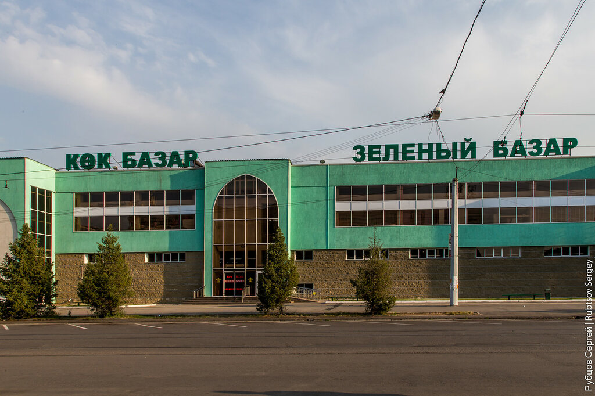
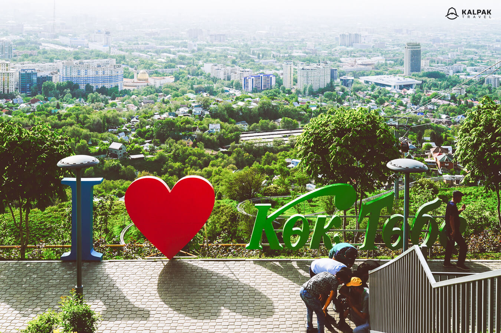
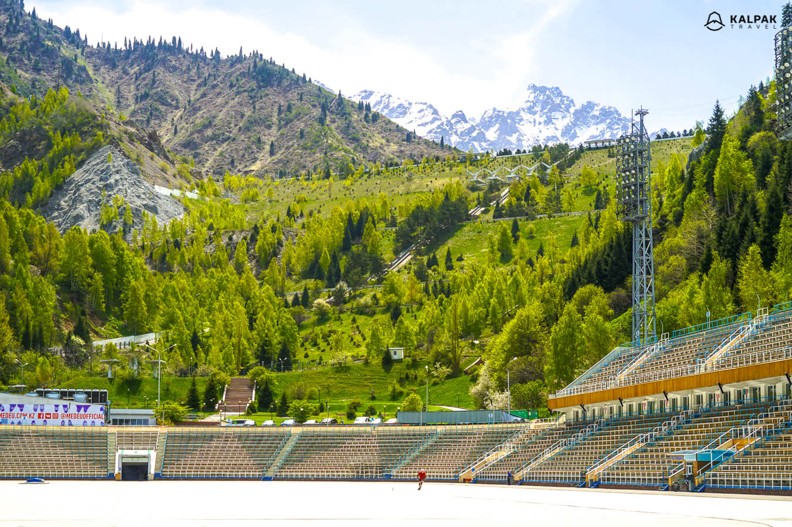
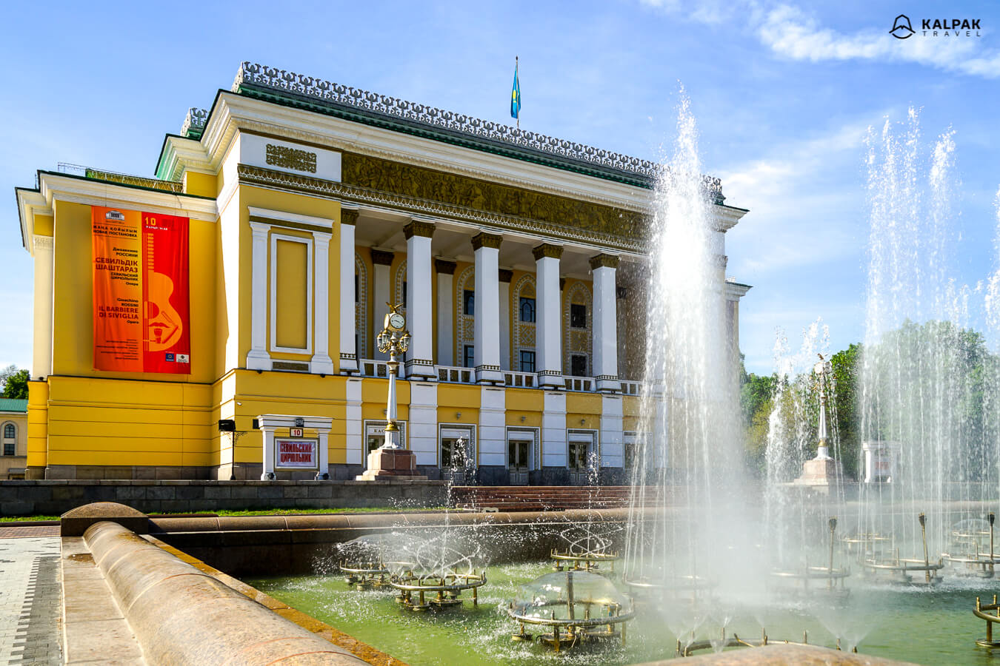
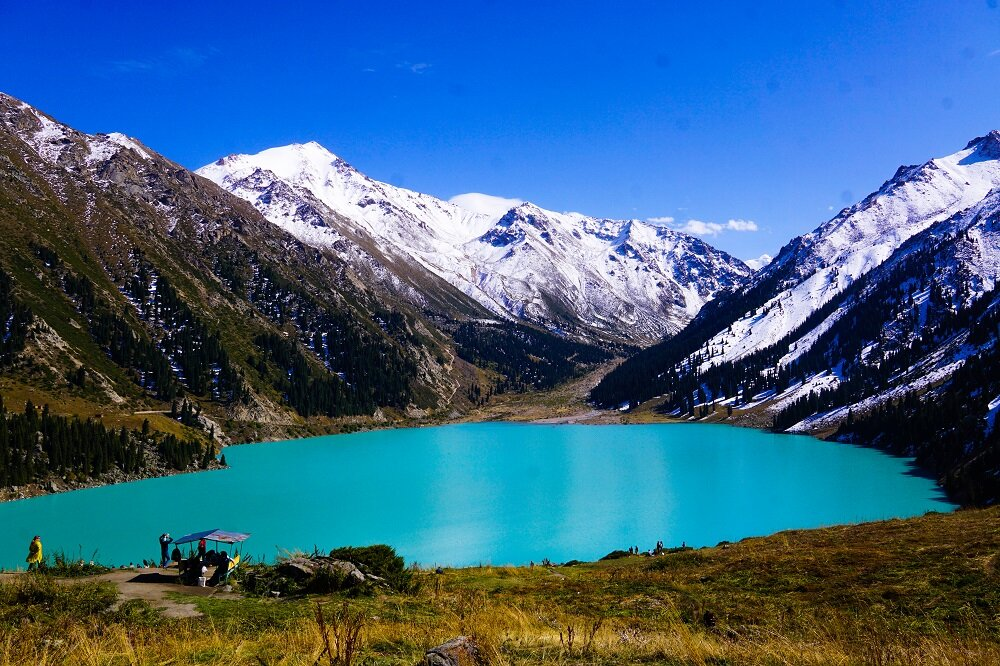

Located in the center of town right next to the Rahat Chocolate Factory, the Green Bazaar is Kazakhstan's most famous market. Built in the 1970's, with a new concrete extension that replaced the outdoor vegetable market in 2016, it is one of the cleanest, neatest markets of Central Asia. Foodies can spend a whole afternoon here sampling Kazakhstan's impressive array of produce made from animal's meat and milk, as well as food from across the Soviet Union.
As a traditionally nomadic nation, meat and dairy take up a lot of space i n the bazaar. And there are a lot of interesting foods here, most famously kazy (horse meat sausage), kurdyuk (salted or smoked sheep butt lard) kymys and shubat (fermented horse and camel milk), as well as cream, cream cheese, yoghurt, kefir and dozens of things that fall in between those categories.
Tajikistan’s bit of the Ferghana Valley is a big producer of all kinds of nuts and dried fruits, especially apricots. Beware, they are very charming. Dungan ladies sell a wide array of spices, measured in vodka shot glasses. The Korean salads are worth sampling. Dropped in Central Asia in the 1930’s without access to their traditional ingredients, the Soviet Union’s koryo-saram started using their pickling and fermentation techniques on ingredients they found locally, inventing a new kind of culinary tradition.

Kok Tobe. Hill is 1,100 meters high and located in the eastern part of Almaty. You can get to its top on a funicular that was built in 1967. A television tower was built in 1983 and it is 371 meters high. After riding the 1,730 meter-long funicular, you can enjoy the view of the city on top of the hill. It is one of the travel highlights of Almaty both for locals and foreigners. In summer, there are occasional concerts or entertainment events. You can also visit the statue of the Beatles. Go out for food experience in a local entertainment park or just have a drink in green summer cafes. Kok Tobe is a nice place to enjoy summer evenings and enjoy the panoramic views of the city. It is a popular place for locals to go in the evening to watch the sunset and the night view of the city. In the evening, the temperature gets cooler and it is very pleasant to spend time there after a hot day in the city.
Since 1972, the population and guests of Almaty city can enjoy the public skating rank Medeo. The initial ice rank was constructed in 1951 and was used for competitions or training of athletes. It is located at 1,691 meters above sea level and it is one of the largest high-altitude ice ranks in the world. In the early 2000s, reconstruction was done and, in 2011, renovation before the Winter Asian Games. It is one of the most popular day trips from Almaty along with Shymbulak.
This building was constructed between 1936 to 1941 by architects N. A. Prostakov and T. K. Basenov. However, the theatre of opera & ballet was established already in 1934 with a performance of the musical comedy “Ayman-Sholpan” written by Mukhtar Auezov. Auezov was a Soviet writer, playwright, and scientist. First Kazakh ballet performance was staged in 1938 and was called «Kaklaman & Mamyr.» It is still a very popular place to watch a classic ballet or get to know folk stories through ballet.
Big Almaty Lake is a natural lake located in Trans-Ili Alatau mountains on 2511 above the sea level near Almaty (15 km South from Almaty). Like a majority of lakes in Trans-Ili Alatau, this lake formed as the result of an earthquake. The lake is a major source of drinking water for the region. People can access the lake by car (approximately 1 hour drive from the city center), bike, or hiking (approximately a half-day trip).
 Return to the main page